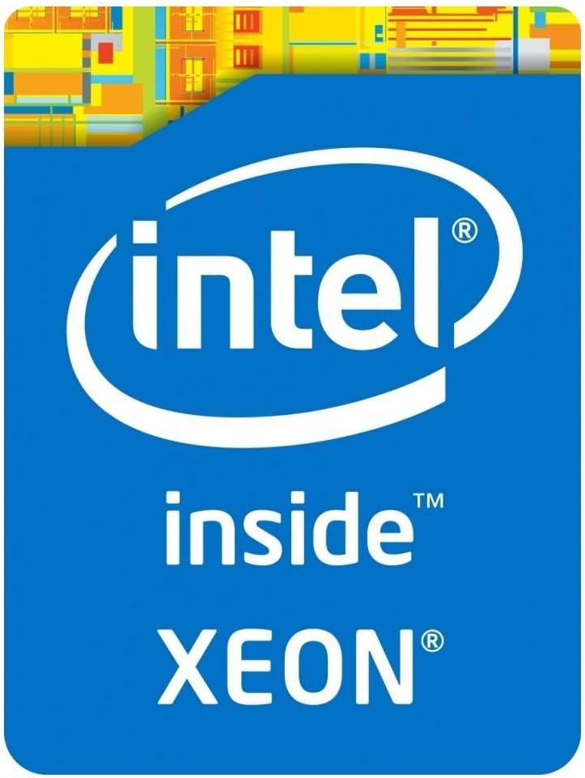
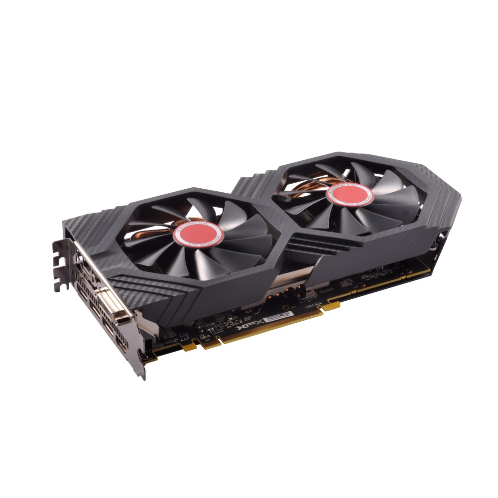

Componentes internos do computador
(X79G-A) Placa mãe: Conecta a grande maioria dos componentes.
(Bluecase DDR3 8GB 1600MHZ) Memória RAM: Armazena temporariamente dados e programas em uso para acesso rápido.
(HD 500GB) Disco Rígido: Armazena permanentemente dados e programas. É consideravelmente mais lento que a RAM.

(Intel Xeon E5-2620V2) Processador: É o cérebro do computador. Executa cálculos e processamentos.

(XFX RX 580) Placa de vídeo: Não é necessária para um PC funcionar, gera imagens no
monitor com uma GPU (Unidade de processamento de gráficos) dedicada, melhorando o desempenho em jogos e edição.
(Brazil PC BPC/5350-M) Fonte de alimentação: Responsável por converter a
energia elétrica da tomada em tensões adequadas para alimentar todos as peças internas do computador, garantindo seu
funcionamento estável.